ЛАБОРАТОРНО-ПРАКТИЧНА РОБОТА
Тема: «Рахункові техніки вишивки»
Мета: засвоєння способів поверхнево-нашивної рахункової техніки вишивки: хрестик, виколювання, лиштва, занизування, штапівка, ретязь, верхоплут; формування вмінь виконувати вишивку рахунковими техніками; виховувати уважність, охайність.
Матеріали та інструменти: тканина, нитки, голки, ножиці, наперсток, п’яльця.
Порядок виконання роботи:
- Ознайомитись з теоретичними відомостями практичної роботи.
- Підібрати тканину, голки та нитки для роботи.
- Згідно з технологічними вимогами вишити зразки поверхнево-нашивних технік рахункової групи 10 см кожний.
Теоретичні відомості:
У народних вишивках, де переважають геометричні та геометризовані орнаменти, найпоширеніші лічильні шви, які тісно пов’язані зі структурою тканини – рівномірним полотняним переплетенням, сталою щільністю та однаковою товщиною ниток основи й піткання. Стібки швів виконують чітко за рахунком ниток тканини. Вони бувають одно- та двобічними, глухими й наскрізними.
Занизування (рис. 29) – двобічне швидке шиття, яке нагадує узорне ткацтво. Його виконують стібками різної довжини швом уперед голку за рахунком ниток тканини залежно від узору. Прямими стібками ведуть неперервну робочу нитку в одному напрямку – вздовж (по горизонталі) або впоперек (по вертикалі) узору, від одного кінця до протилежного і назад, з переходом за рахунком ниток тканини то на лицьовий бік, то на зворотний (рис. 29, а – г). На зворотному боці відтворюється протилежний узор (рис. 29, в, нижня частина).
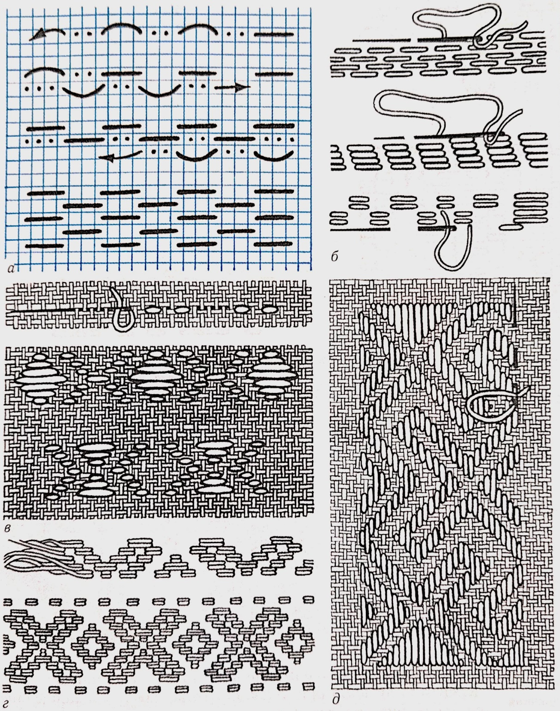
Рис. 29.Занизування та його різновиди: а-г - поздовжнє; д - поперечне
Узори занизуванням утворюють паралельні ряди горизонтальних або вертикальних (рис. 29, д) стібків, покладених на відстані однієї-двох ниток. Узори мають безліч варіантів і поєднань (рис. 30). їх треба добирати так, щоб стібки були не за надто довгими, не чіплялися й не витягувалися під час користування, прання та прасування.
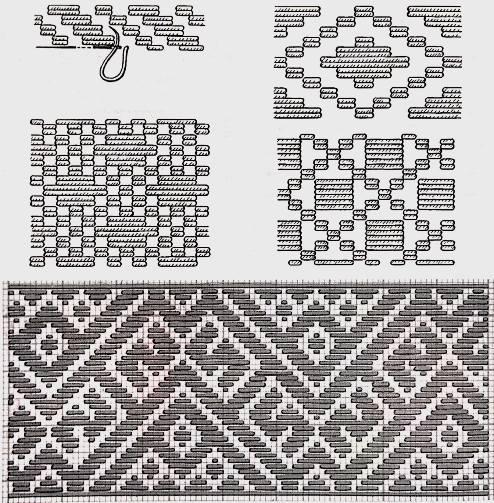
Рис. 30.Узори для вишивання занизуванням
Занизування як самостійний вид вишивки і в поєднанні з іншими швами найчастіше застосовують на Поліссі. Це один із стародавніх видів народного вишивання. У Білорусі техніку занизування називають нацяг, нацяганнє, процяг, в Україні – заволікання, занизування, затягування, перетинання.
Особливе місце посідає ця техніка в народних вишивках українських рушників для заповнення площин узору.
У народних вишивках узори занизування виконували пере важно червоними нитками, іноді з незначним вкрапленням синіх, або чорних. Ними прикрашали рукави, комір і поділки сорочок, фартухи, рушники, хустки та інші головні убори.
Гладь лічильна (настил, настилування) – одна з найдавніших технік вишивання. Цю гладь широко застосовують для оздоблення одягу та побутових речей на Полтавщині, Чернігівщині, Поділлі. Вона буває одно- та двобічною, а залежно від розміщення стібків – прямою (лиштва) і косою.
Характерним для цієї техніки є те, що вишивають нею за рахунком ниток тканини паралельними стібками, віддаленими один від одного па одну нитку.
На Полтавщині та Чернігівщині лічильну гладь виконували переважно нитками білого або сірого кольору, які залишали ся від ткання полотна. І нині це поєднання створює чудові вишивки. Гра світла й тіні ниток, покладених за узором у різних напрямках, створює враження різних відтінків.
На Поділлі лічильну гладь вишивали кольоровими нитками – чорними, червоними та інших кольорів. Вона буває багато барвною з добре дібраним колірним поєднанням ниток.
Однобічну лічильну гладь (рис. 31) виконують з лицьового боку тканини, а на звороті утворюються дрібні (в одну нитку) стібки по контуру узору.
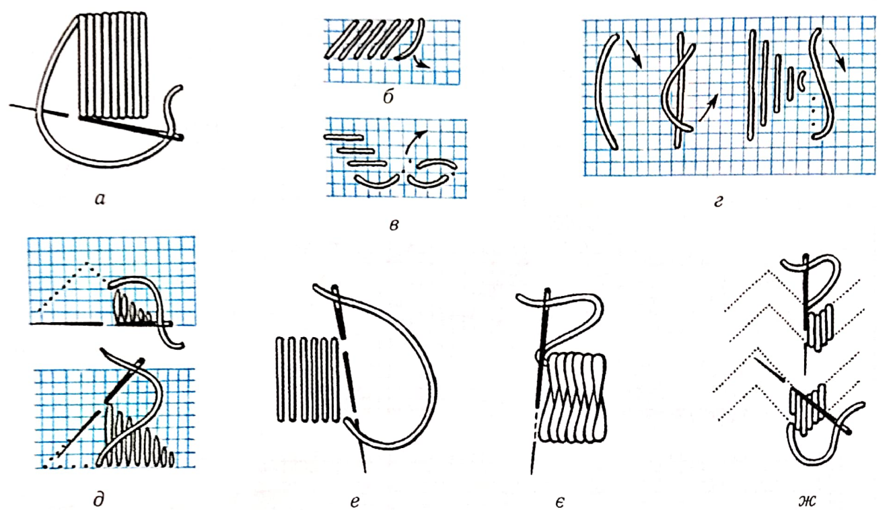
Рис. 31.Різновиди однобічної лічильної гладі
Двобічну лічильну гладь (рис. 32) настилають одночасно з лиця та зі споду тканини.
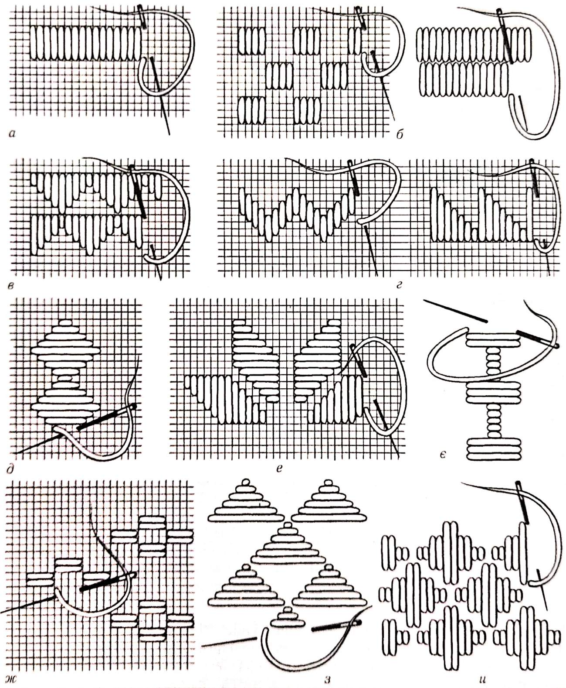
Рис. 3.Різновиди двобічної лічильної прямої гладі
Нитки для роботи мають бути м’якими, слабко крученими, щоб стібки щільно вкривали тканину.
У прямій гладі стібки кладуть уздовж ниток тканини горизонтально або вертикально (рис. 31 і 32), а в косій – із різ ним нахилом (рис. 33).
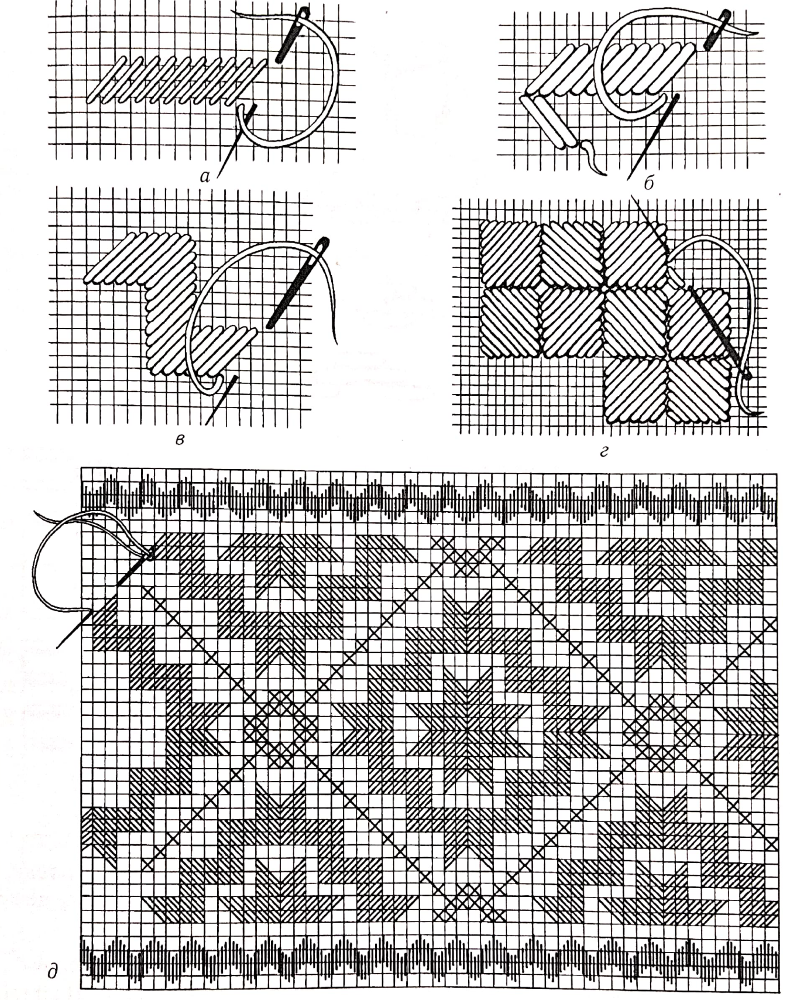
Рис. 33. Коса лічильна гладь: а-в – послідовність виконання; г. д – узори
Набирування – глухий лічильний шов (рис. 34). Його виконують парними або одинарними, паралельними горизонтальними стібками через одну нитку (рис. 34, а). Кожен окремий стібок кладуть па парній кількості ниток тканини (4 – 6 – 8) вправо або вліво на відстані у півстібка від осі попереднього ряду (рис. 34, б).
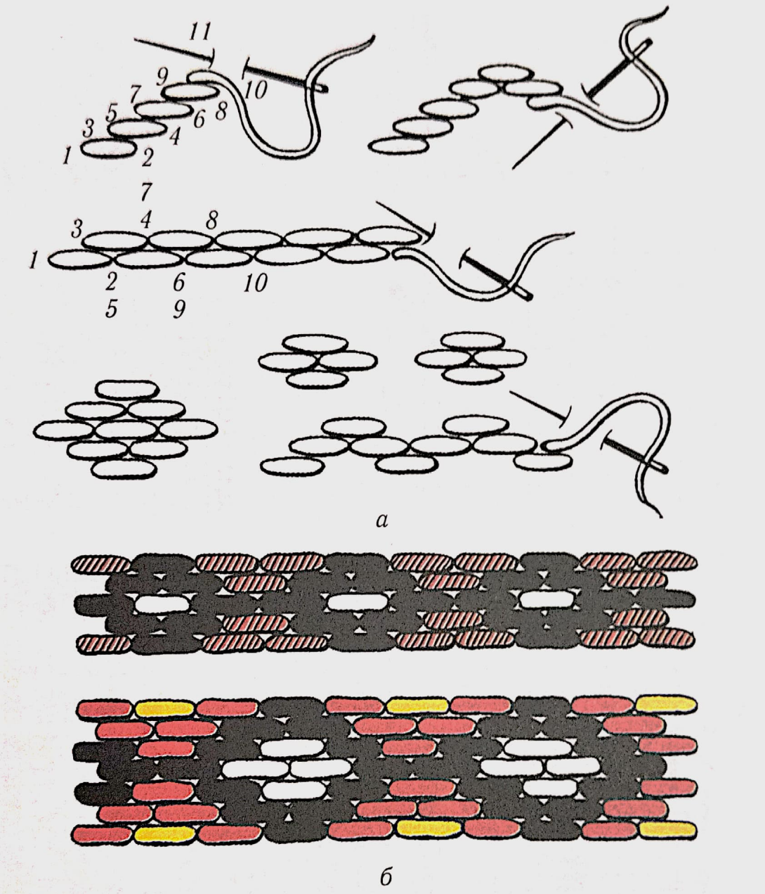
Рис. 34.Набирування: а - послідовність виконання; б – узори
Гладь лічильна розріджена – це вертикальні стовпчики з горизонтальних стібків нитками одного кольору. Вона може бути одно- та двобічною.
Гладь лічильна розріджена однобічна (рис. 35) дуже популярна у вишивках Румунії, Молдови та па Східному Поділлі, де має назву поверхниця. Шов складається з вертикальних розріджених стовпчиків горизонтальних стібків однакової довжини.
Вишивають поверхницею геометричні орнаменти (рис. 35, А) нитками неяскравих кольорів: бежевими, сірими, золотистими, коричнево-зеленими. Кожен стібок у всіх стовпчиках узору виконують паралельно один одному. Узор вишивають рядами стібків справа наліво або зліва направо. Починають роботу із закріплення робочої нитки у лівому нижньому кутку, кладуть перший стібок 1–2 завдовжки в три – п ять ниток зліва направо, виводячи голку вертикально вгору над першим стібком через дві або три нитки тканини (2–3). Другий стібок 3–4 кладуть паралель но першому справа наліво і виводять голку вгору по вертикалі (4–5) через дві-три нитки. У такій послідовності вишивають перший стовпчик узору (рис. 35, а). Залежно від узору відстань між стібками по вертикалі може бути у чотири, шість і більше ниток (6 –7, 16– 17).
Після закінчення першого стовпчика узору стібком 21–22 голку з ниткою виводять вправо па відстань одного стібка (22–23).Роботу повертають і знову знизу вгору стібками такої самої довжини починають вишивати другий стовпчик (23–24 і т. д.) відповідно до узору (рис. 35, б–г). Отже, на виворітному боці маємо вертикальні стібки, а на лицьовому – горизонтальні. Готову вишивку зверху та знизу обводять пилочкою або кіскою (стібками півхрестика).
Ажурними узорами поверхниці можна прикрасити рукави блузок і суконь, манішки дитячих і чоловічих сорочок.
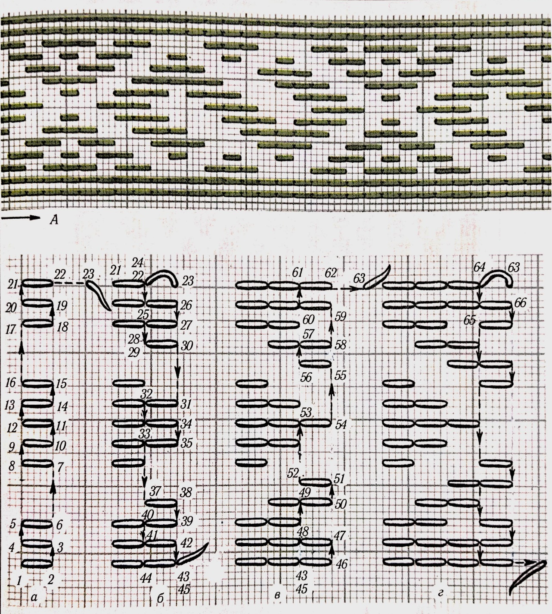
Рис.35.Гладь лічильна розріджена однобічна, або поверхниця:
а - г - послідовність виконання; А - узор, вишитий поверхницею
Гладь лічильна розріджена двобічна, або кафасор (рис. 36), відрізняється від однобічної переходом від стібка до стібка зі споду не вертикально, а діагонально. Таку гладь поєднують із геометричними узорами, виконаними іншими техніками вишивання – хрестиком, мережкою, щільною гладдю. Цією гладдю вишивають переважно жіночі блузки, використовуючи нитки чорного, червоного, сірого та світло-коричневого кольорів. Ця вишивка характерна для західних областей України і Поділля.
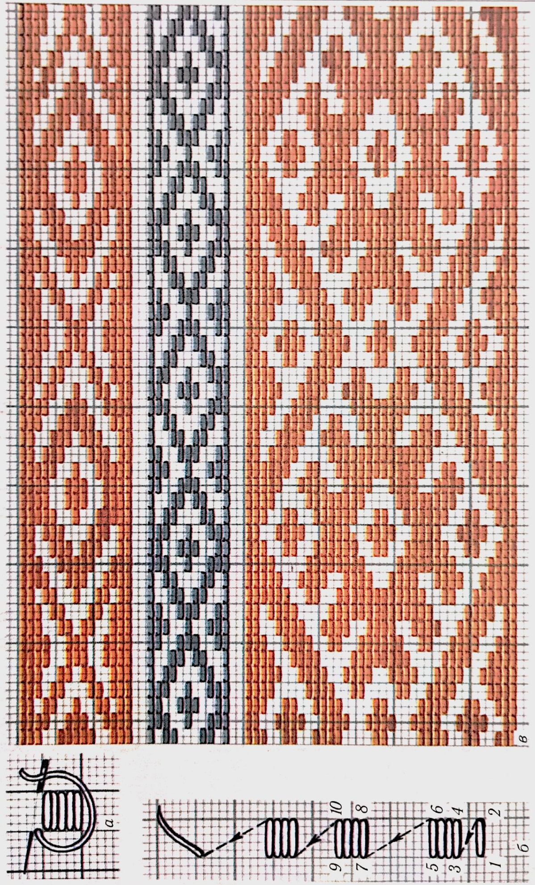
Рис. 36.Гладь лічильна розріджена двобічна, або кафасор:
а, б — послідовність виконання; в — узори, вишиті кафасором
Качалочкова лиштва, або шатранка (рис. 37), також належить до лічильної гладі. Її викопують рядами паралельних стібків двобічної гладі, покладених упритул один до одного, по горизонталі та вертикалі. Розмір стібків (їх довжина) залежить від ґатунку тканини та характеру узору. Вертикальні (поперечні) ряди горизонтальних стібків називають стовпчиками та колодочками, а поздовжні ряди вертикальних стібків гладі – качалочками.Цей шов характерний для східпоподільських вишивок Вінницької та Хмельницької областей України. Ним вишивають сорочки, рушники, настільники, серветки, хустки, застосовуючи нитки не тільки червоного кольору, а й контрастні поєднання яскравих кольорів для сучасних узорів. Часто елементи узору, вишитого качалочками, обшивають двобічною штапівкою нитками чорного кольору.
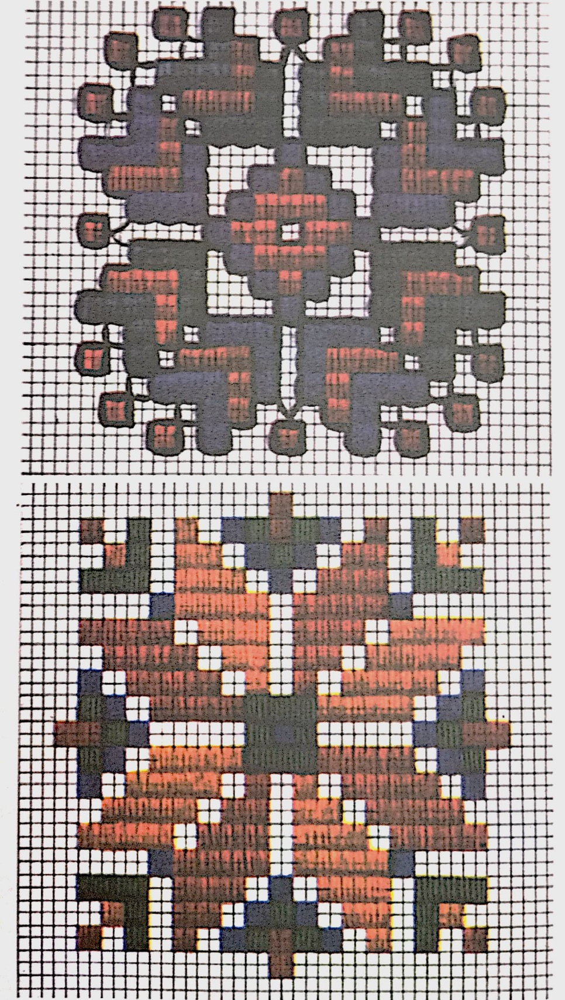
Рис. 37,Качалочкова лиштва
Лічильна гладь поєднується з іншими техніками: виколюванням, хрестиком, штапівкою, наскрізними швами.
Виколювання належить до лічильних стягувальних швів (рис. 38). У народній вишивці виколювання виконують радіальними стібками, якими розтягують нитки полотна від центра виколки. Цей шов шиють у вигляді квадратиків і кружечків, обметаних стібками двобічної гладі або петельного шва в один чи два ходи. Ці фігурки мають різні назви.
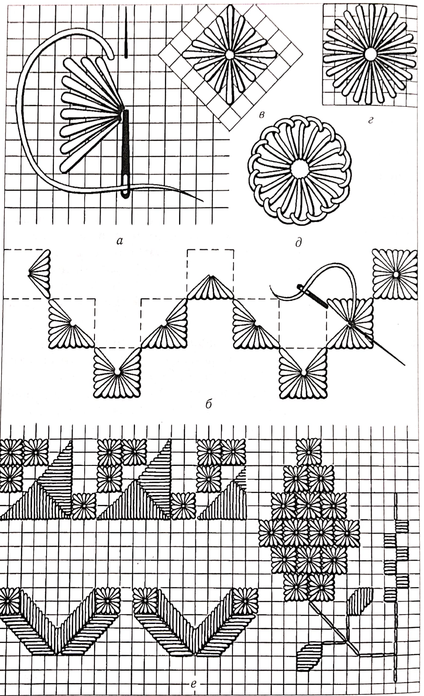
Рис. 38.Виколювання: а, в, г, д – форми елементів; б - послідовність виконання виколювання по ламаній лінії; е - узори з виколюванням
Солов’їні вічка (рис. 38, а) виконують білими нитками. Спочатку за рахунком ниток намічають контур – позначають сторони майбутнього вічка. У центрі проколюють дірочку (у давнину її проколювали веретеном) і виконують радіальні стібки через одну нитку тканини. Голку завжди вколюють у центр, а виколюють на контурі виколу або навпаки. Після кожного стібка стягують робочу нитку в напрямку виколювання голки і таким чином розширюють центр (рис. 38, а).
У разі, коли елементи цього шва утворюють ламану лінію, послідовність її виконання показано на рис. 38, б. Досить часто такий шов у полтавських і покутських вишивках поєднують з лічильною гладдю (рис. 38, в), зерновим виводом, хрестиком та іншими техніками.
Товмацька зірка (рис. 38, в) подібна до солов’їних вічок. Різниця полягає в тому, що солов’їні вічка мають форму квадратів, а товмацька зірка – ромба. Шиють її чорними або червоними нитками. Очко (рис. 38, г) – виколка круглої форми з Покуття. Кручений шов (рис. 38, д) складається з петельних стібків. Поширений на Покутті. Шиють його червоними, зеленими, жовтими, теракотовими нитками, а по контуру додатково обводять чорною ниткою стебловим швом.
Декоративні зірочки (рис. 39) вишивають із чотирьох – восьми і більше стібків-променів за таким самим принципом, як і попередні виколи.
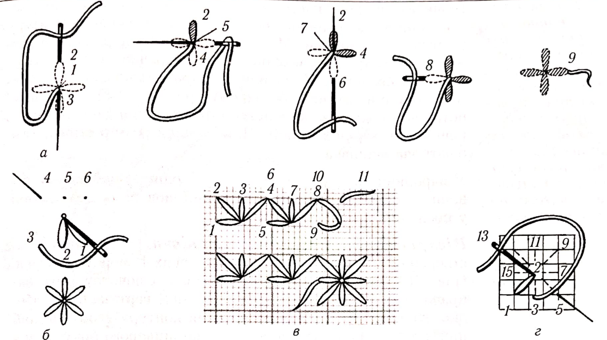
Рис. 39.Декоративні зірочки:
а - з чотирьох променів; б - з шести; в, г - з восьми стібків-променів
Найпоширеніша лічильна техніка вишивання півхрестиком і хрестиком відома з давніх часів. У давнину тонкими стібками півхрестика майстрині «розписували» чудовими узорами рукави й поділки сорочок, рушники, хустки та домашні речі, обводили контури узорів, виконаних іншими швами. До початку другої половини XIX ст. вишивали також складною технікою двобічного хрестика, в якій візерунок був однаковим з обох боків тканини. Наприкінці минулого століття на був поширення однобічний хрестик, широко застосовуваний У народній творчості для оздоблення одягу, рушників і предметів домашнього вжитку.
Вишивати півхрестиком і хрестиком можна за рахунком ниток тканини полотняного переплетення, по канві га контурах, позначених крапками. Можна вишивати на доріжках від висмикнутих із тканини поздовжніх і поперечних ниток, які утворюють квадрати. У кожному квадраті вишивають по одному стібку півхрестика або одному хрестику. Під час роботи потрібно стежити за кількістю ниток тканини і однаковим напрямком верхніх стібків. Чим менший розмір стібка, тим ошатніша вишивка.
У народних вишивках півхрестик – один із найдавніших швів – застосовують як самостійний шов та як додатковий у поєднанні з іншими швами.
Півхрестик, або двобічна штапівка, – двобічний шов, створений із прямих і похилих лицьових і зворотних стібків (рис. 40). Виконують його за два ходи. Спочатку зліва направо прокладають ряд горизонтальних, вертикальних або діагональних стібків для позначення контуру узору та дріб них деталей. Один стібок кладуть із лицьового боку, а другий – зі споду тканини. В кінці узору робочою ниткою у зворотному напрямку (справа наліво) заповнюють проміжки між стібками і одночасно виконують деталі узору, розміщені всередині та зовні від контуру. Штрихові лінії на узорах показують напрямок ходу стібків із вивороту.
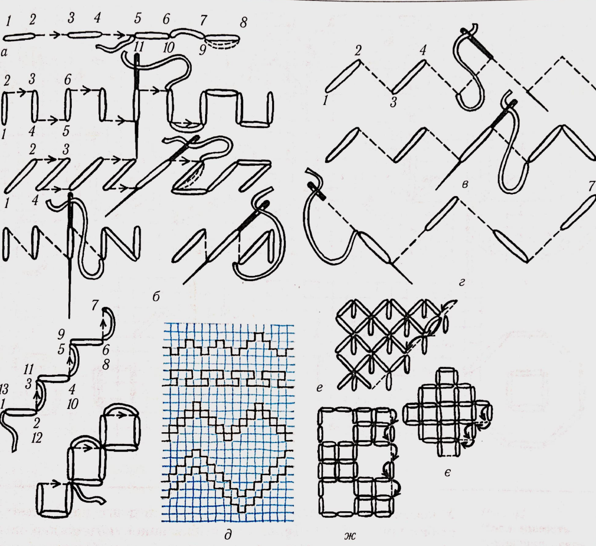
Рис. 40.Півхрестик, або двобічна штапівка, та його різновиди:
а - прутик; б - зубцюватий; в, г - пилочка; д - східці; е - лусочка; є - клітка; ж - шашечка
Існує багато різновидів цього шва у вигляді прямих і косих ліній від найпростіших (рис. 40, а–г) до складних: східці, лусочка, клітка, шашечка та ін. (рис. 40, б–ж).
На основі двобічної штапівки створено багато декоративних швів, які виконують нитками одного або кількох кольорів (рис. 41 і 42). Штапівкою обводять окремі мотиви узорів, виконаних іншими швами: гладдю, качалочкою, хрестиком тощо.
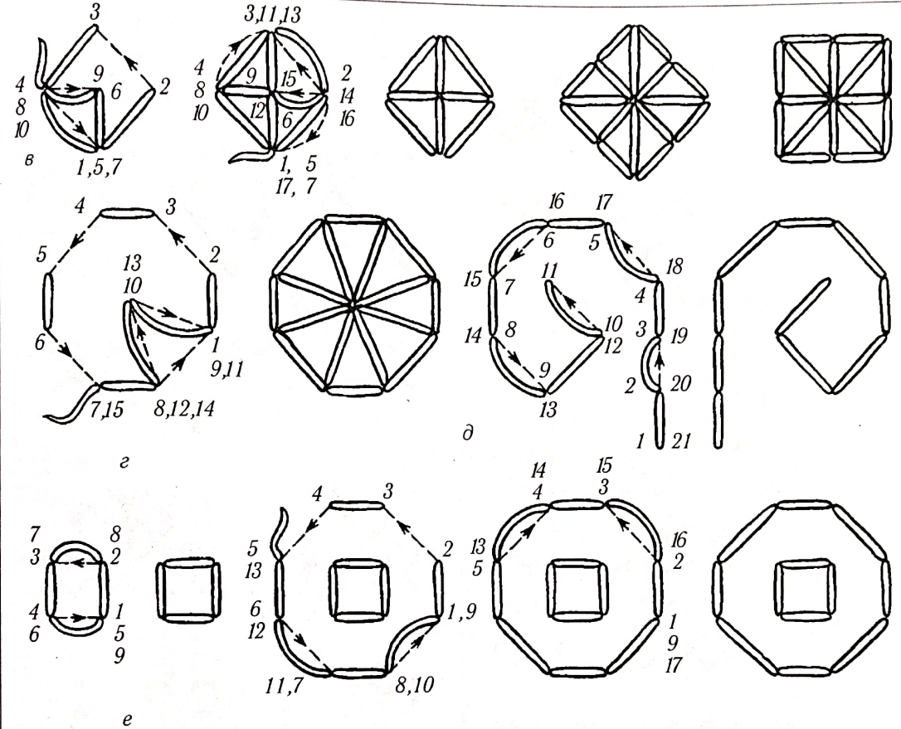
Рис. 41.Послідовність виконання декоративних швів двобічною штапівкою:
а - пташині сліди; б - гілочки; в, г - зірочки, або вічка; д - баранячі роги; е - жаб’яче око
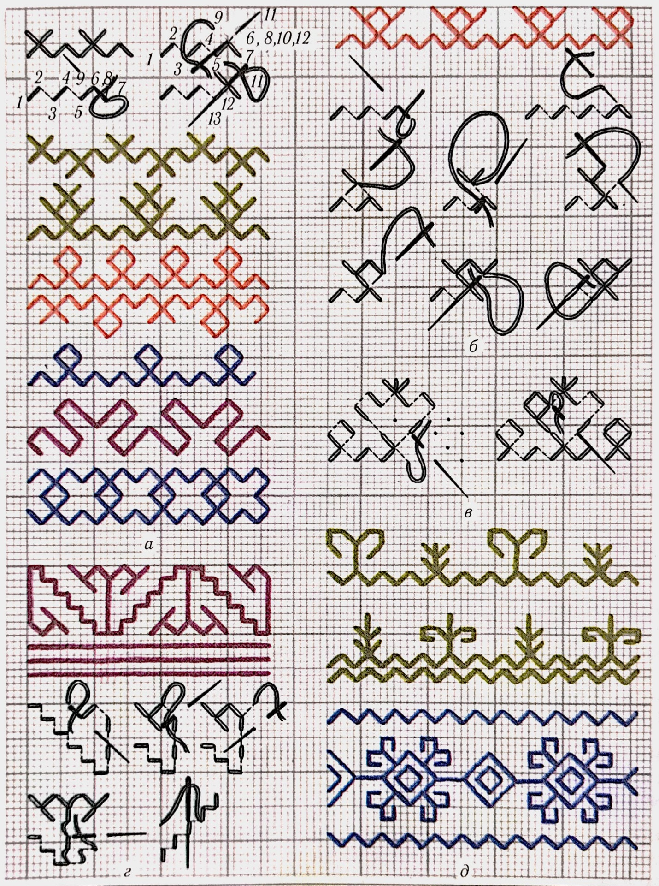
Рис. 42.Послідовність виконання геометричних орнаментів двобічною штапівкою та їхні узори
На основі стібків півхрестика, обплетених однобарвною або кольоровою ниткою, створено декоративні ажурні шви поверхневого верхоплута.
Верхоплут із прямих стібків (рис. 47) – глухий однобічний шов. Його виконують за рахунком ниток паралельними вертикальними стібками в один або кілька рядів, які обплітають (обплутують) поперечними – горизонтальними такого самого або іншого кольору.
Верхоплут в один ряд (рис. 47, а) виконують за два ходи. Спочатку за рахунком ниток тканини настилають верти кальні стібки ряду зліва направо. В останньому стібку робочу нитку виводять на одну нитку вище від нижнього кінця стібка і починають обплітати стібки у зворотному напрямку – справа наліво. Голку з робочою ниткою ведуть зліва направо знизу вгору, тобто піддівають попередній (передостанній) стібок і протягують робочу нитку (1–2–3) . Потім справа наліво піддівають попередній (третій) стібок і вводять голку з ниткою зверху вниз зліва направо (3–4) під нього (4–5),притягуючи нитку. По черзі, обвиваючи вертикальні стібки робочою ниткою то зверху, то знизу, вишивають декоративну смужку.
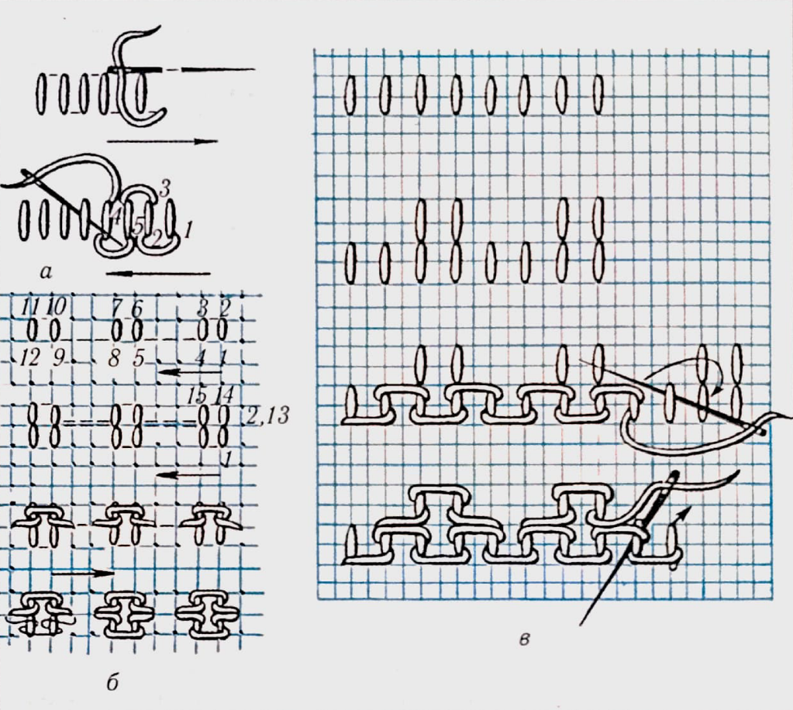
Рис. 47.Верхоплут із прямих стібків
Зі стібків півхрестика складається шов хрест, або хрестик . Він буває одно- та двобічним, прямим, що утворений із двох взаємно перпендикулярних стібків – горизонтального й вертикального, та косим – із двох схрещених похилих стібків, тристібковим та подвійним – із чотирьох стібків. Вишиваючи хрестиком, треба стежити за рахунком ниток тканини, бо помилка хоча б на одну нитку спотворить вишивку. Стежать також, щоб усі верхні стібки перетинали нижні завжди в одному напрямку.
Вишивають один хрестик на чотирьох, трьох або двох нитках, тобто відраховуючи чотири, три або дві нитки по висоті й стільки ж по довжині, залежно від товщини ниток робочої тканини та обраного узору. Дуже дрібненькі хрестики, вишиті на одній нитці, на Поділлі, Буковині й Прикарпатті називали зерням та зерном.
Виконують хрестикові шви за один або два ходи по горизонталі, вертикалі та діагоналі.
Розглянемо послідовність виконання однобічних (шитих з лиця) хрестиків та їхні різновиди, які набули поширення у другій половині позаминулого століття і популярні й нині.
Хрестик косий за два ходи (рис. 49) виконують з двох однакових за довжиною діагонально схрещених лицьових стібків. Перший хід починають зліва направо накладанням нижніх стібків по горизонталі. Кожний хрестик починають стібком з лівого нижнього кута у правий верхній кут (1–2, 3–4 і т. д.) і виводять голку згори вниз у лівий нижній кут наступного хрестика зі споду (рис. 49, а). Закінчивши ряд, у зворотному напрямку справа наліво кладуть верхні стібки з нижнього правого кута у верхній лівий (рис. 49, б, д).
Послідовність виконання хрестиків по вертикалі та діагоналі показано на рис. 49, в, г, е. При цьому треба стежити, щоб верхній стібок па всьому узорі лягав в одному напрямку. Тому в четвертому ході голку вводять під стібок.
Косий хрестик у висоту або довжину вишивають не за квадратом, а за прямокутником (рис. 49, є). Застосовують його у декоративних вишивках.
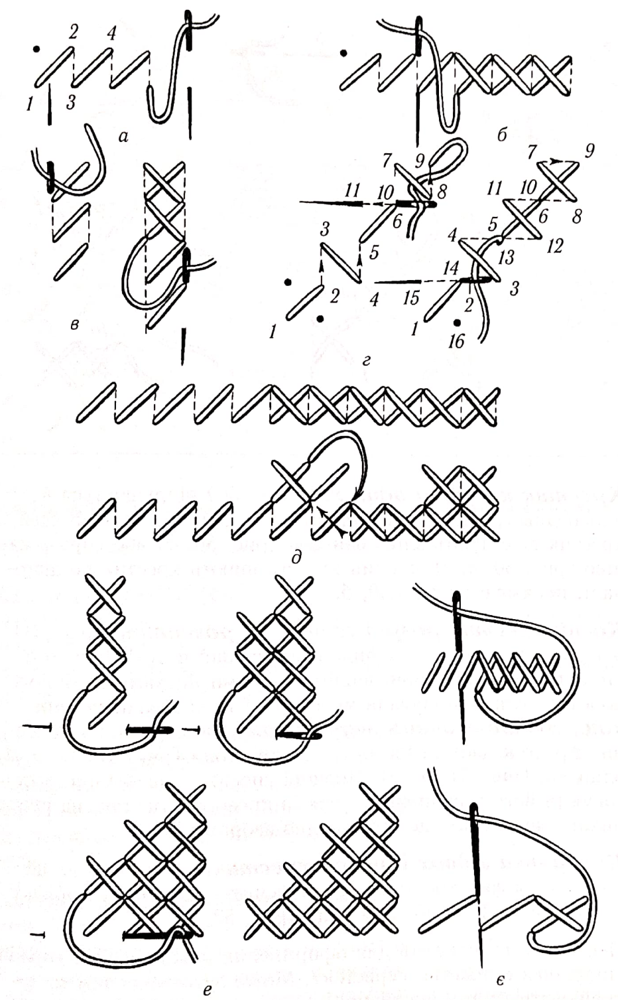
Рис. 49.Хрестик косий за два ходи:а, б, д -горизонтальний; в - вертикальний;
г, е - діагональний; є - видовжені хрестики
Хрестик косий за один хід (рис. 50) відрізняється від попереднього способу порядком накладання стібків. Кожен хрестик виконують зліва направо (рис. 50, д) або справа наліво (рис. 50, в, г) за один хід. Як шиють хрестик по діагоналі, показано на рис. 50, б.

Рис. 50.Хрестик косий за один хід
Косий хрестик розріджений, або розсипний (рис. 51), був дуже популярним у вишивках першої чверті минулого століття. Ажурні узори, вишиті чорними нитками на білому полотні, дуже нагадували мереживо і їх називали обманкою, або фальшивим мереживом. Виконують розріджений хрестик двома способами: за два ходи (рис. 51, д) та за один хід (рис. 51, б–г). Перший спосіб – двобічний, застосовують його у вишивці блузок із прозорих тканин, на рушниках, занавісках, де чітко видно зворотний бік.
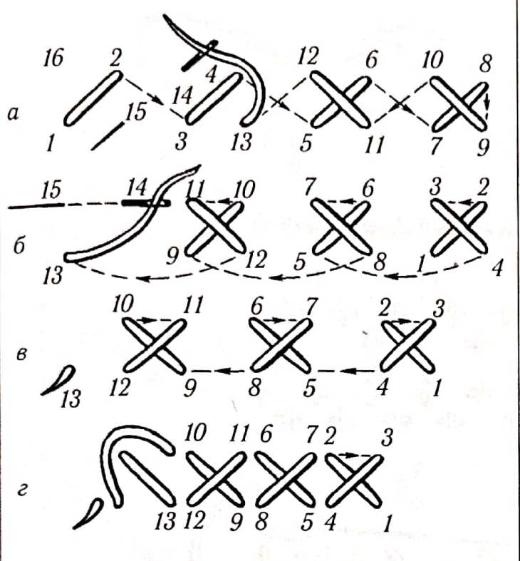
Рис. 51. Розріджений, або розсипний, косий хрестик: а - за два ходи через хрестик; б, в - за один хід через хрестик; г - за один хід через нитку
Кривулька з двох і трьох хрестиків (рис. 52) – це смужка з косих хрестиків, розміщених у шаховому порядку в два (рис. 52, а) або три ряди (рис. 52, б).
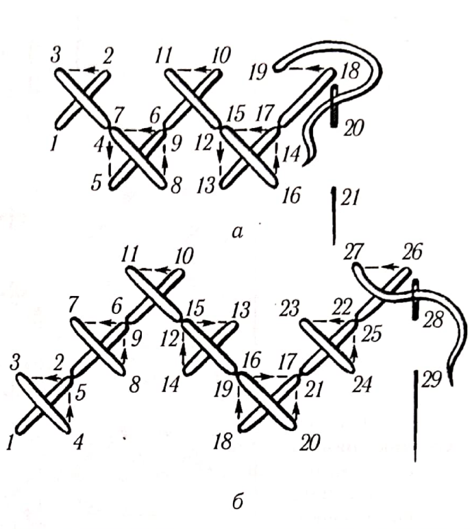
Рис. 52. Кривулька з косих хрестиків: а - у два ряди; 6 - у три ряди
Цей шов застосовують для оформлення країв узорів і виробів (підшивка манжетів, серветок). Може бути основним та доповнювати узор у поєднанні з іншими швами.
Хрестик прямий (рис. 53) складається з двох взаємно перпендикулярних (горизонтального та вертикального) стібків. Вишивають його за один та два ходи (рис. 53, а, б).Застосовують як самостійний шов (рис. 53, в) або в поєднанні з косим хрестиком (рис. 53, г).
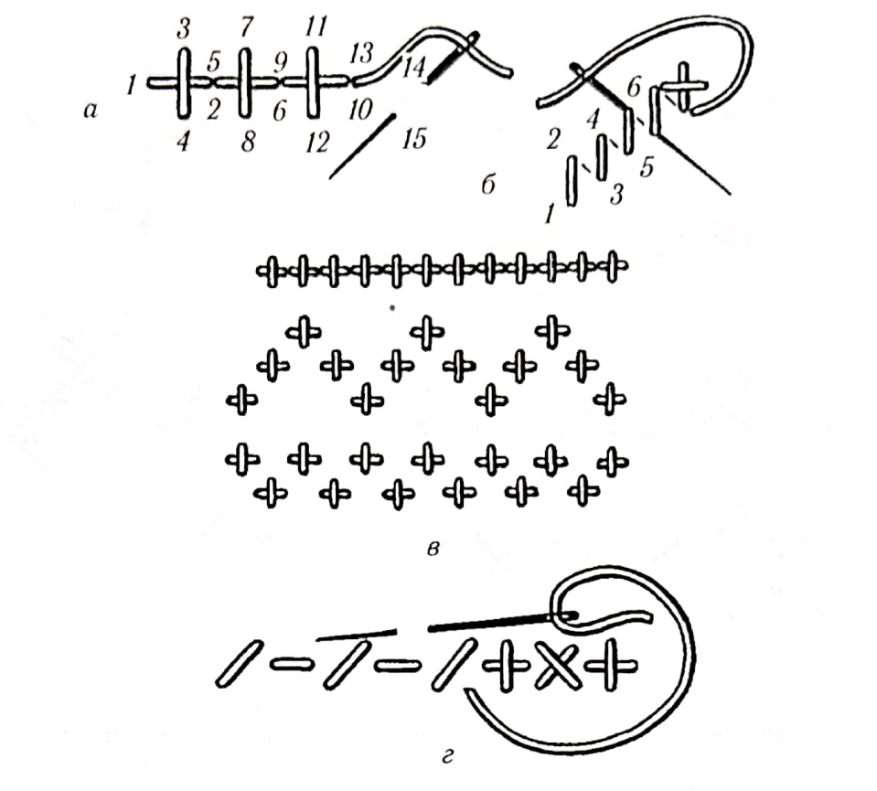
Рис. 53.Хрестик прямий: а - горизонтальний; 6 - діагональний;
в - зразок для вишивання; г – комбінований з косим хрестиком
До середини XIX ст. вишивали переважно косим двобічним хрестиком, однаковим з лицьового та зворотного боків. Він трапляється в стародавніх вишивках та на виробах, які мають бути красиво й чисто оформлені з обох боків: рушники, занавіски, блузки. Виконують його за чотири та за один ходи.
Хрестик косий двобічний за чотири ходи (рис. 54): спочатку роблять пилочку за два ходи зліва направо та справа наліво, а потім перекривають її стійки перехресними стібками третім ходом зліва направо і закінчують ряд четвертим ходом, перекриваючи проміжки з лицьового та зворотного боків справа наліво (рис. 54, а). Ходи можна закінчувати півстібками (рис. 54, б).
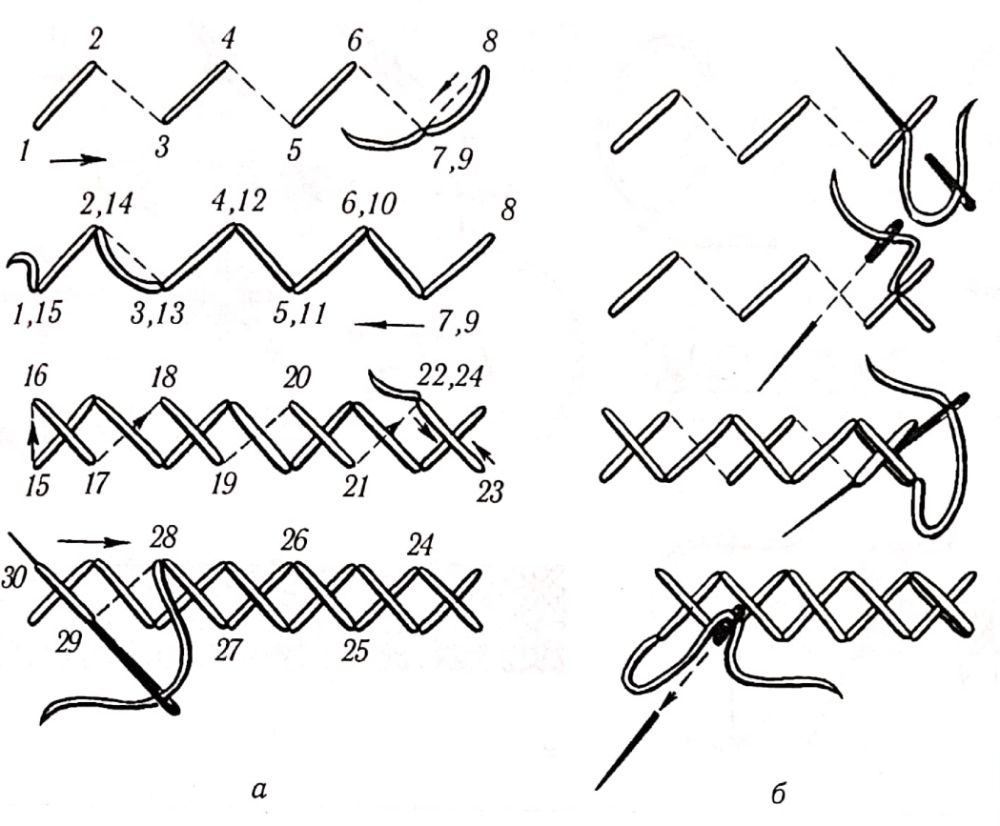
Рис. 54.Хрестик косий двобічний за чотири ходи (два способи)
Хрестик косий двобічний за один хід (рис. 55) вишивають кожний окремо зліва направо за допомогою додаткових півстібків. Починають роботу з середини першого майбутнього хрестика, закріплюючи кінчик нитки (1–2). Потім кладуть перший діагональний двобічний стібок із лівого нижнього кута у правий верхній (2–3) і виводять голку зі споду на початку стібка (3–4) (рис. 55, а). До другого діагонального стібка пере ходять за допомогою півстібка 4–1 із нижнього лівого кута в середину хрестика і виводять голку в правий нижній кут (1–5) (рис. 55, б). Потім кладуть другий подвійний діагональний стібок 5–6 із правого нижнього кута в лівий верх ній і виводять голку зі споду в нижній правий кут хрестика (6–7) (рис. 55, в). Другий хрестик та всі наступні починають подвійним діагональним стібком зліва направо (7–8–9) (рис. 55, г). За допомогою півстібків 9–10 і 10–11 (рис. 55, д)переходять до другого діагонального стібка 11–12–13 (рис. 55, е) та всіх наступних (рис. 55, є, ж).
Цей спосіб трохи копіткий, потребує уважності та акуратності під час накладання стібків.
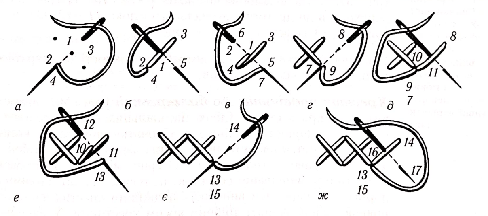
Рис. 55.Хрестик косий двобічний за один хід
Хрестик подвійний, або болгарський (рис. 56), виконують із чотирьох стібків (двох діагональних та двох взаємно перпендикулярних) за один хід. Спочатку вишивають косий хрестик, а потім кладуть зверху вниз вертикальний стібок, а зліва направо – горизонтальний (рис. 56, а, б). Його застосовують при вишиванні серветок, подушок, панно, килимів, доріжок. У народних вишивках подвійний хрестик часто доповнює узори, вишиті дрібним косим хрестиком. У народному вишиванні Полісся досить часто трапляється косий хрестик тристібковий (рис. 56, в, г). На рис. 56, д, е подано варіанти декоративних хрестиків.
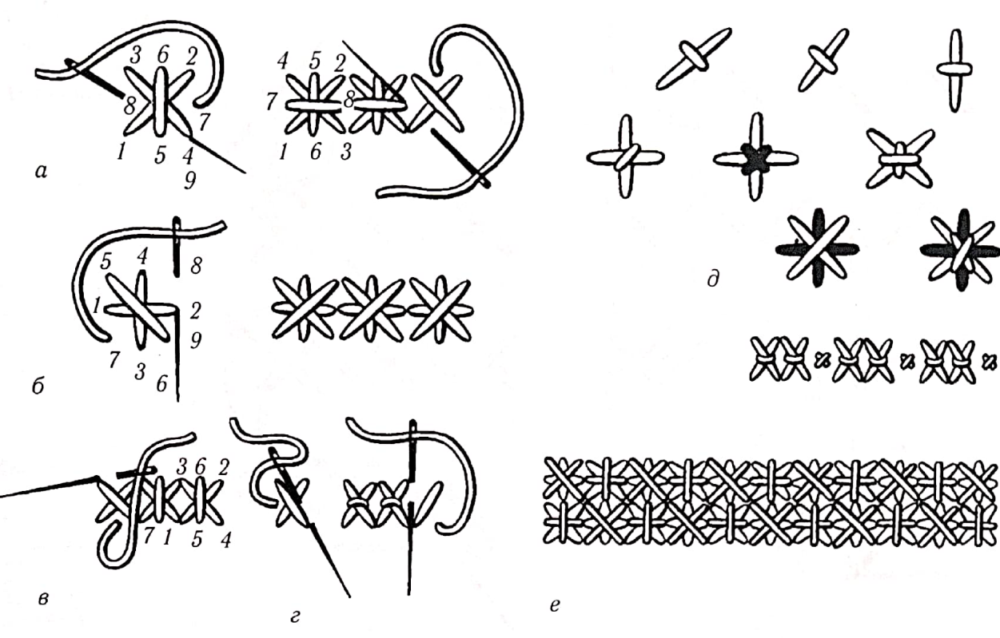
Рис. 56.Хрестик подвійний: а, 6 - у чотири стібки (різні варіанти виконання);
в, г - у три стібки; д, е - декоративні варіанти шва
Кіска, або ретязь (рис. 57), – різновид косого хрестика – є доповненням до інших лічильних швів та маскує з’єднувальні шви.
Ретязь вишивають зліва направо з рівносторонніх або видовжених хрестиків. Спочатку роблять косий хрестик 1–4, а потім із нижнього лівого кута кладуть направо вгору косий стібок 5–6 па відстані в один хрестик. Голку проколюють у верхній правий кут хрестика (6–7) і перекривають хрестик довгим стібком (рис. 57, а–в). Набираючи на голку нитки тканини то згори, то знизу, шиють кіску потрібних довжини і напрямку (рис. 57, г, д). Складніші кіски показано на рис. 57, е–ж.
Плетінку (рис. 57, з–і) виконують із розріджених або густо покладених схрещених стібків однакової довжини і застосовують як доповнення до інших швів.
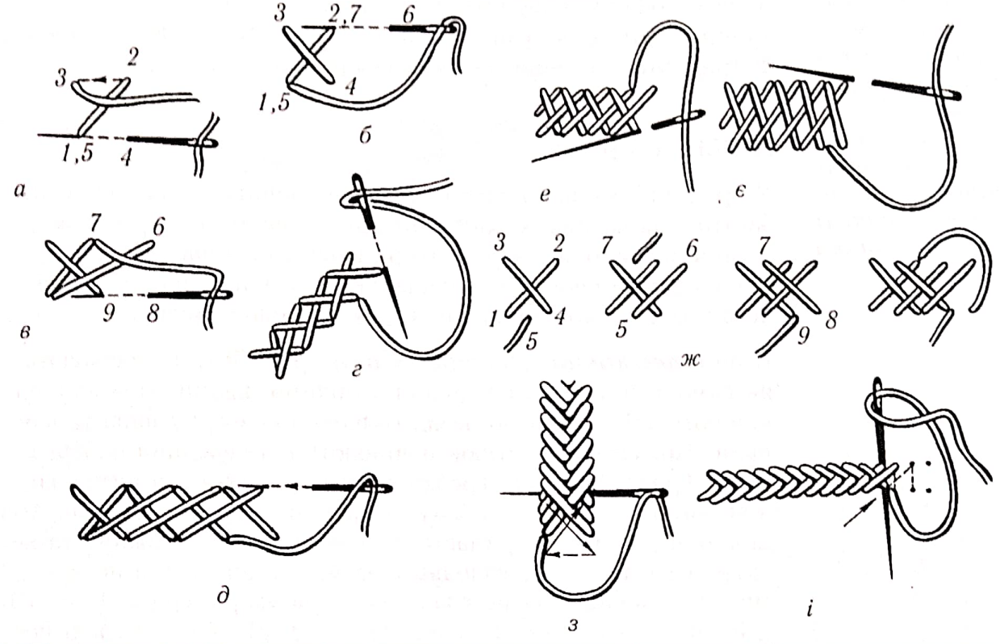
Рис. 57.Кіска, або ретязь, та її різновиди:
а-д - ретязь; е-ж - складні кіски; з-і – плетінки
Вишивки хрестиком і півхрестиком дуже популярні у багатьох народів. Варіанти цих швів використовують у декоративному оформленні предметів побуту. Вишивкою хрестиком прикрашають одяг і предмети побуту, застосовуючи стародавні традиційні та нові, сучасні візерунки.
Додаткові шви.Народні вишивки, виконані лічильними швами, завжди доповнюють обводки – легкі додаткові шви, які підкреслюють контури окремих фігур або граничну смугу орнаменту. До них належать прутики, пилочки, китички або кущики, виконані штапівкою, кіски та плетінки, сіточки, гребінці та багато інших.
Сіточка (рис. 109) – ланцюжок із дрібних квадратиків, вишитих по горизонталі, доповнював узори лічильних швів. Сіточкою закріплюють також краї тканини у виробах із торочками, вона може бути самостійним швом, виконаним у два, три і більше рядів.
Є кілька способів вишивання сіточки. Два з них (рис. 109, а)шиють справа наліво стібками завдовжки дві – чотири нитки тканини, залежно від її щільності та призначення виробу. Послідовність виконання шва показано цифрами.
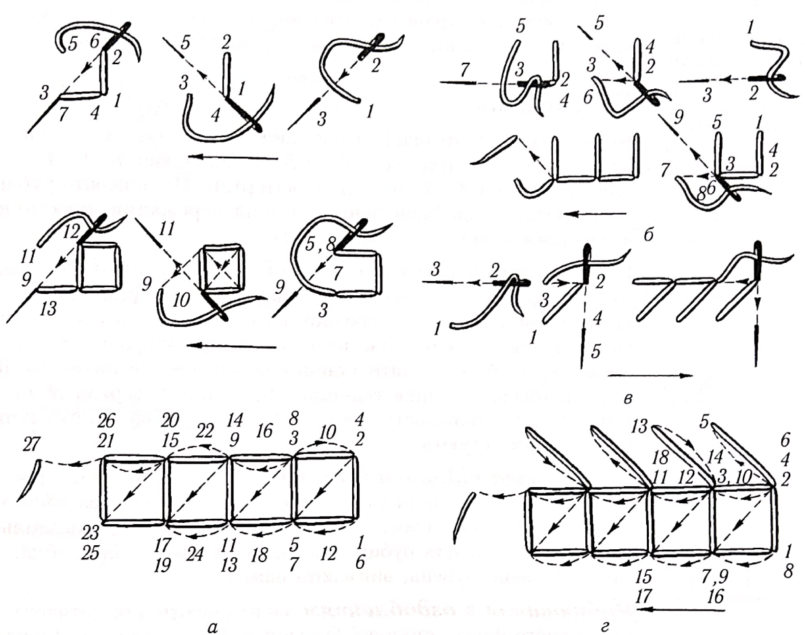
Рис. 109.Сіточка: а - квадратами; б-г - з гребінцем
Сіточка з гребінцем (рис. 109, б–г) прямим чи навкісним складніша для виконання. Виконують її справа наліво за принципом ланцюжка сіточка.
Контрольні питання:
- Які кольори і види орнаменту характерні для техніки занизування?
- Назвіть техніки поверхнево-нашивної рахункової групи.
- Які є види техніки хрестик?
- Охарактеризуйте способи виконання техніки хрестик.
- Назвіть вимоги до виконання техніки лиштва.